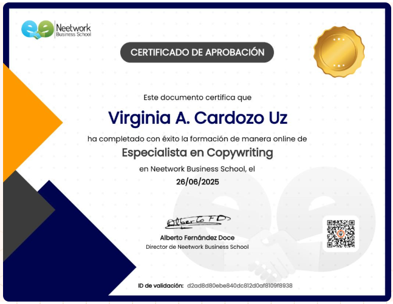
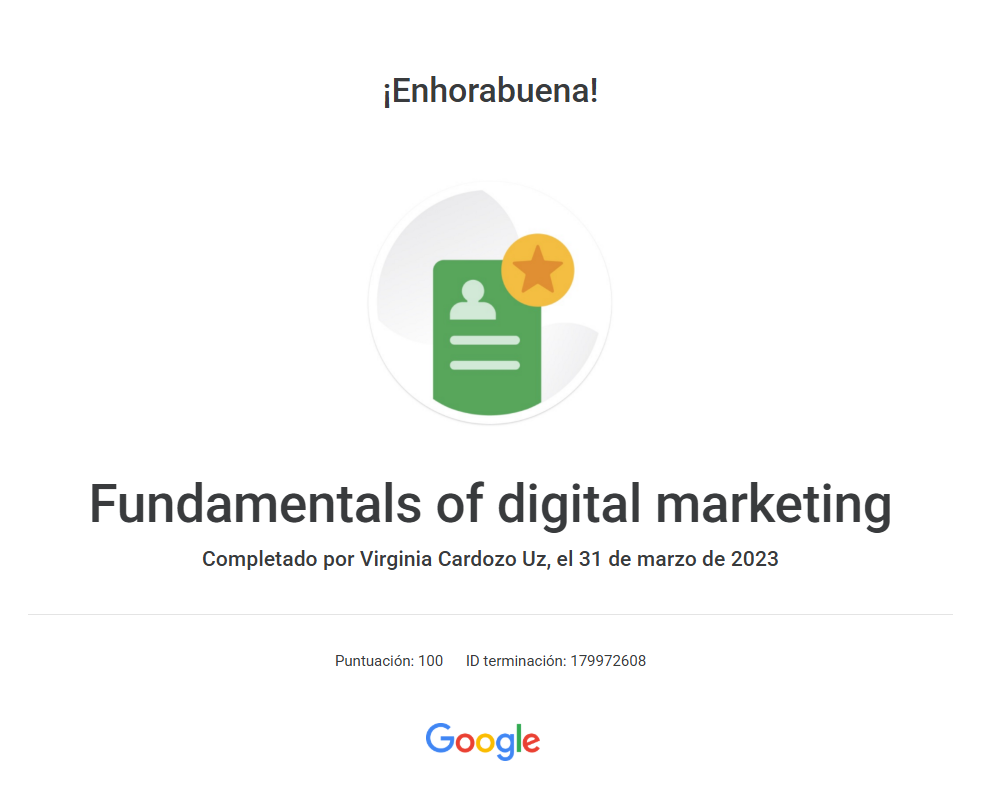
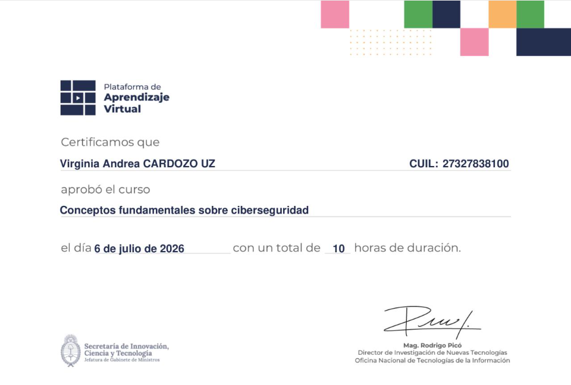
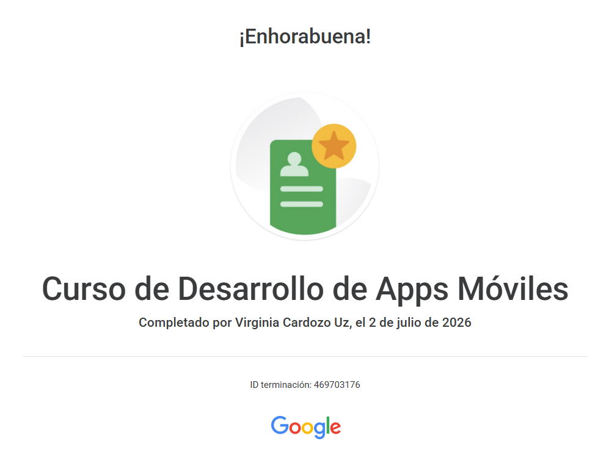
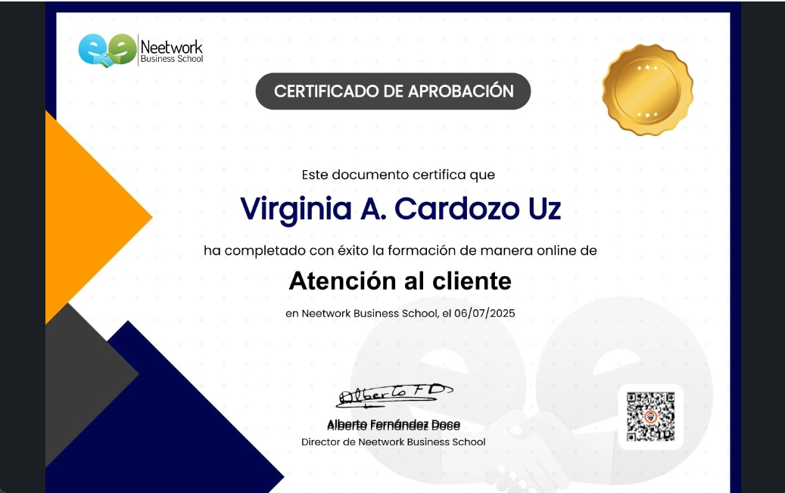
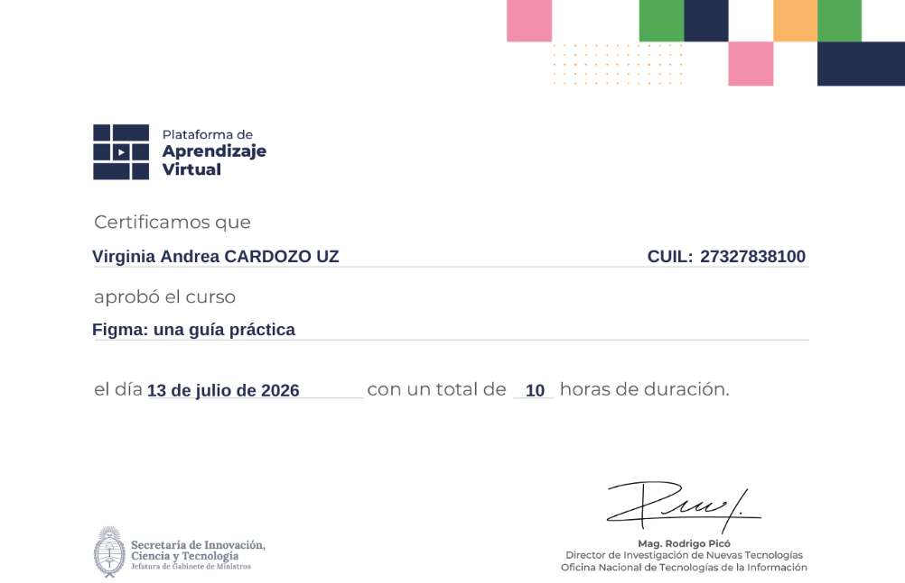

Sobre mí

Especialista en Copywriting
Creo contenido que conecta, comunica y convierte ideas en mensajes que dejan huella. Combino creatividad, estrategia y una mirada detallista para encontrar las palabras adecuadas para cada proyecto. Me apasiona transformar ideas en textos claros, atractivos y con personalidad, siempre pensando en las personas que están del otro lado.

Certificación en Marketing Digital
Cuento con formación en Marketing Digital y una visión integral de la comunicación online. Conozco las herramientas y estrategias necesarias para crear contenido que atraiga, genere interacción y fortalezca una marca. Me gusta combinar creatividad y estrategia para lograr una comunicación auténtica, efectiva y orientada a resultados.

Conceptos fundamentales sobre Cyberseguridad
Cuento con conocimientos fundamentales en ciberseguridad y protección de la información. Mi formación me permitió comprender los principales riesgos, amenazas y buenas prácticas dentro del entorno digital. Me interesa seguir incorporando herramientas que me permitan crear soluciones web cada vez más seguras y confiables.

Desarrollo de Apps Móviles
Cuento con formación en desarrollo de aplicaciones móviles y los fundamentos necesarios para crear experiencias digitales funcionales. Este aprendizaje me permitió acercarme al mundo del desarrollo mobile y comprender sus principales herramientas y procesos. Me motiva seguir explorando nuevas tecnologías y ampliar mis conocimientos como desarrolladora.

Atención al cliente
La atención al cliente me enseñó la importancia de escuchar, comprender y brindar soluciones de manera clara y cordial. Desarrollé habilidades de comunicación, empatía y resolución de situaciones, siempre buscando generar experiencias positivas. Considero que entender a las personas es clave para construir vínculos de confianza y ofrecer un servicio de calidad.

FIGMA, una guía práctica
Mi formación en Figma me permitió incorporar herramientas para crear diseños digitales modernos, funcionales y visualmente atractivos. Aprendí a trabajar con interfaces, componentes y prototipos, dando vida a ideas de manera práctica y ordenada. Me interesa combinar diseño y tecnología para crear experiencias digitales intuitivas y agradables.